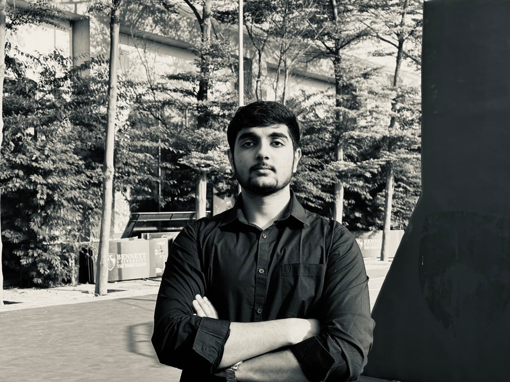

Backend Engineer • AWS Certified • Cloud & DevOps
Pre-final year student specializing in scalable server-side systems and managing cloud infrastructure. Experienced in API development and deployment pipelines.

Bennett University
B.Tech in Computer Science
Aug. 2024 - Jun. 2028
Greater Noida
Novas Arc
Software Engineer Intern
AWS CI/CD Pipelines
Hyderabad
Caudal AI Labs
Software Engineer Fellow
TerminalBench-2 Workflows
Remote
AWS Cloud Solutions Architect
Continuous Delivery & DevOps
Advanced React
130+ DSA problems solved
I'm a backend engineer who thrives in building scalable systems and distributed compute platforms. I like owning backend infrastructure end-to-end—going from architecture to automated deployment. Performance, reliability, and automation matter.
Architected AWS CI/CD pipelines using Docker, automating build and test workflows. Managed 5-6 concurrent pipelines across Production, QA, and Test for zero-downtime deployments.
Engineered a platform where multiple GPU Nodes participate using pipeline parallelism. Implemented coordinator-worker architecture for GPU discovery and custom model sharding.
Built a distributed compute platform executing user-submitted ML workloads. Implemented resource-aware scheduling and real-time job monitoring using WebSockets.
Developed reproducible Linux-based engineering environments using Git, Bash, Docker, & Harbor. Automated validation pipelines and oracle-based test suites.
Software Engineer Fellow
Software Engineer Intern
Python • Fast APIs • Transformers • ZeroMQ • Quantization
Community run LLM inference System with coordinator-worker architecture. Dynamic MoE placement and custom model sharding for GPU participation.
📈 Pipeline ParallelismJava • Spring Boot • Docker • PostgreSQL • React
Distributed compute platform with resource-aware scheduling, dead-worker recovery, and real-time job monitoring using WebSockets.
📈 Asynchronous Execution